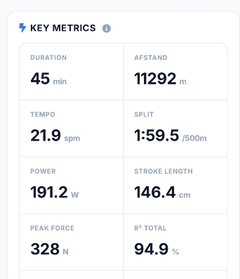
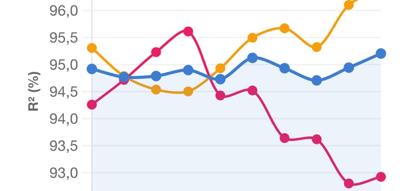
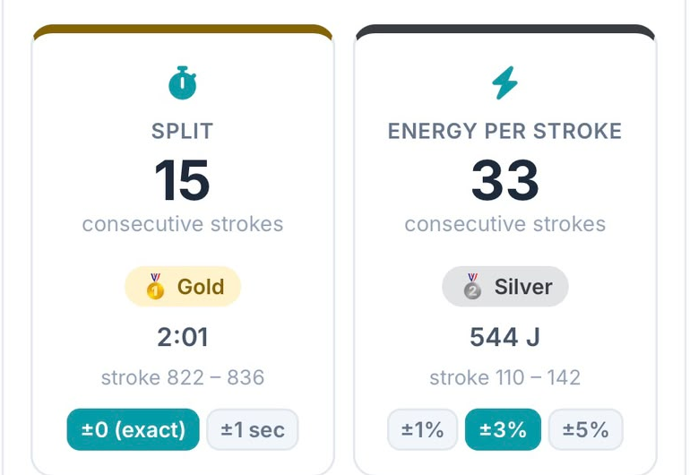
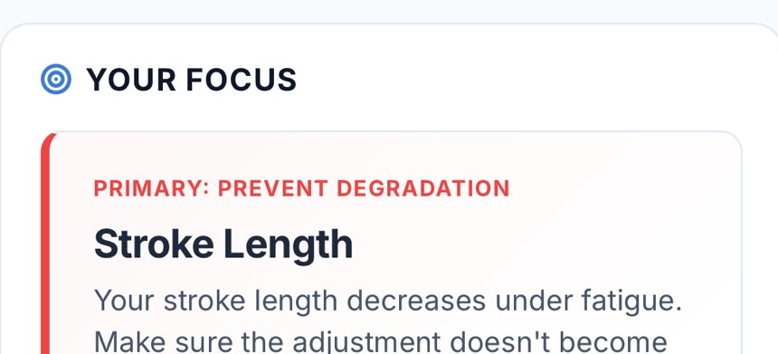
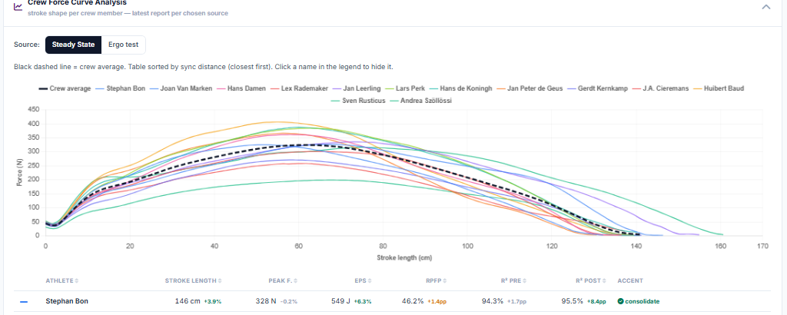
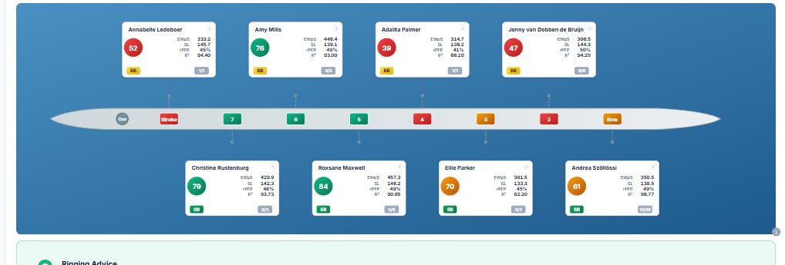
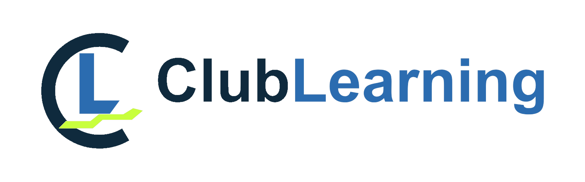

Eén propositie, drie schakels
Van de ergometer naar je volgende training
RP3 en Beat Your Best overlappen niet. Elke schakel heeft één taak, en elke schakel bouwt voort op de vorige.
Jij roeit.
- Je beste, meest effectieve haal
- Beweegt als een boot
- Elke haal tot in detail vastgelegd
De machine
Wat je deed.
- Elke workout opgeslagen en gesynchroniseerd
- Je logboek: afstand, split, tijd
- Koppelt met Beat Your Best
Je data, veilig bewaard
Hoe je het deed, en wat je nu moet doen.
- Haalkwaliteit, consistentie, voorspelbaarheid
- Wat vermoeidheid met je haal doet
- Je profiel en focuspunt
- Progressie vs. intensiteit en doelen
- Ploegrankings, bootposities, wedstrijdplan
Je persoonlijke coach
Zonder de RP3 is er geen data per haal om te analyseren. Zonder Beat Your Best blijft het grootste deel van die data ongebruikt. Samen maken ze de RP3 het meest complete coachingsinstrument op de markt.
De meest gedetailleerde haaldata van alle ergometers
- Dynamisch gevoel, dicht bij roeien op het water
- Krachtloze richtingsverandering: train precies de beweging die het meest telt
- Volledig verbonden krachtcurve voor elke afzonderlijke haal
- De juiste bewegingsvolgorde, haal na haal getraind
- Automatische synchronisatie met je RP3-account
- Ploegdata om te gebruiken voor ploegcoaching
Maakt van die data coaching
- Automatisch rapport voor elke workout: steady state, intervallen, ergotest
- Haalkwaliteit: hoe herhaalbaar en voorspelbaar je haal is
- Vermoeidheidsanalyse: wat er in je haal verandert als het zwaar wordt
- Progressie: hetzelfde type workout vergeleken over weken en maanden
- Relevante, bruikbare coaching: één duidelijk focuspunt en streefwaarden voor je volgende trainingen
- Ploegrankings op basis van data, niet op gevoel
- Ploegcoaching: wie aandacht nodig heeft, opstellingen en bootposities
Je RP3 heeft de antwoorden al. Beat Your Best stelt de data de juiste vragen: niet alleen hoe ver en hoe snel, maar hoe goed, hoe consistent, en wat je moet veranderen.
Waar de portal ophoudt en Beat Your Best begint
De RP3-portal toont je data. Beat Your Best leest ze voor je.
De RP3-portal is een uitstekend logboek waarin elke haal is vastgelegd. Maar van duizenden halen een conclusie maken, laat hij aan jou over. Dat werk doet Beat Your Best.
| Jouw vraag | RP3 Portal | Beat Your Best |
|---|---|---|
| Wat heb ik geroeid? | Afstand, tijd, split, tempo, vermogen: elke workout gelogd | Dezelfde kerncijfers, als startpunt van de analyse |
| Hoe ziet mijn haal eruit? | De krachtcurve, haal voor haal | Je gemiddelde haal vs. je beste 15% vs. een referentiecurve |
| Wat voor workout was dit? | Dat weet jij, de portal slaat het alleen op | Automatisch herkend: steady state, lange of korte intervallen, ergotestStreef- en referentiewaarden |
| Is mijn haal consistent? | De cijfers staan er, per haal; vergelijken doe je zelf | Consistentie en voorspelbaarheid gescoord voor elke workout |
| Wat gebeurt er als ik moe word? | Verstopt in de data | Laat zien welk deel van je haal als eerste wegzakt onder vermoeidheidAutomatische herkenning in een van de 7 roeiprofielen |
| Word ik beter? | Een geschiedenis van losse workouts | Appels met appels: hetzelfde type workout over weken en maanden |
| Waar moet ik nu aan werken? | Daar is de portal niet voor gebouwd | Eén focuspunt, ergo-streefwaarden en een wedstrijdplan per afstandLegt verband tussen je verschillende soorten workouts, met pacingadvies |
| Hoe doet mijn ploeg het? | Workoutdata van de hele ploeg op één plek | Wie aandacht nodig heeft, krachtcurves van de ploeg, coachtips, overzichten, rankings, bootposities en wedstrijdplan |
doet het de data is er, de conclusie trek je zelf niet zijn rol
Aan de slag
In één minuut gekoppeld. Daarna gewoon roeien.
Koppel je RP3-account
Log vanuit Beat Your Best één keer in met je RP3-account. Geen exports, geen bestanden uploaden.
Roei zoals altijd
Train op je RP3. Je workout synchroniseert zoals altijd met de RP3-portal.
Je rapport staat klaar
Beat Your Best herkent het type workout en maakt je analyse automatisch.
Wat je na elke workout krijgt
Van cijfers naar een duidelijke volgende stap

Wat je deed
Afstand, split, tempo, vermogen en haallengte in één oogopslag.

Hoe je het deed
Hoe voorspelbaar je haal blijft tijdens de training, en waar hij onder vermoeidheid begint weg te zakken.

Hoe consistent je bent
De Consistency Challenge: hoeveel halen achter elkaar houd je precies gelijk?

Wat je nu moet doen
Eén focuspunt voor je komende trainingen, op basis van je eigen data.

Voor clubs: de hele ploeg in één overzicht
Vergelijk van elke roeier de krachtcurve, het profiel en het trainingsvolume in het Crew Coach-dashboard.

Voor clubs: wie zit waar
Bootposities en alternatieve opstellingen, berekend uit het energetisch profiel van elke roeier.
Bewijs van het water · World Rowing Masters Regatta, Bled 2026
Maar 8,3% van de masters wint stelselmatig
We analyseerden elke officiële uitslag van Bled 2026: 4.303 roeiers en 6.245 geklokte boten. Twee derde van het veld won nooit een heat. Een kleine groep won keer op keer.
Aandeel van alle 4.303 roeiers. Mannen en vrouwen verdelen zich vrijwel identiek.
roeiers wonnen meer dan twee keer: gemiddeld 4,4 overwinningen (mannen) en 4,1 (vrouwen)
besliste de H 8+ bij de mannen: marges meet je in halen, niet in meters
van hun overwinningen was ook de snelste tijd van het hele veld (21% mannen, 26% vrouwen)
van alle roeiers won helemaal geen heat
Het gat naar de top is niet meer meters. Het zijn betere halen, langer volgehouden.
Op dit niveau traint iedereen hard. Wat de kopgroep onderscheidt, is hoe goed ze hun haal bij elkaar houden als het pijn doet: consistentie, en precies weten wat er onder vermoeidheid wegzakt.
Precies dat meet de RP3 en analyseert Beat Your Best.
Top-mastersroeiers in de categorieën D, E en F trainen al op de RP3 met Beat Your Best, en ze winnen. Het werkt.
Bron: officiële uitslagen van RegattaCentral, World Rowing Masters Regatta 2026. Volledige analyse: clublearning.nl/tools/bled-2026-in-cijfers
De pilot
Een kleine groep, persoonlijk geselecteerd
RP3-dealers in Duitsland, het Verenigd Koninkrijk en Australië nodigen elk 5 tot 10 van hun meest betrokken RP3-klanten uit, zowel individuele roeiers als clubs, om mee te doen aan de Beat Your Best-pilot.
Selecteert en nodigt je uit
Je hebt al een RP3, of je club heeft er een. Je dealer weet dat je serieus traint en laat je als een van de eersten meedoen.
Self Coach
- Automatische analyse van elke workout
- Je roeiprofiel en je progressie in de tijd
- Een persoonlijk focuspunt, ergo-streefwaarden en wedstrijdplan
Crew Coach
- Alle roeiers van een of meer ploegen in één dashboard
- Wie heeft aandacht nodig, en betaalt de training zich uit?
- Krachtcurves van de ploeg en berekening van bootposities

Ondersteuning met online cursussen. Leer je eigen data lezen en de datagedreven coachaanpak toepassen, in je eigen tempo.
- Beat Your Best: Coaching with Data
- Training with the RP3 Dynamic Rowing Machine
- Rowing Technique
- Better Training for Master Rowers